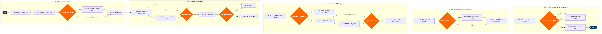

| Step | L4 Step Name | KPI / Target | Pain Point / Risk | Gate |
|---|---|---|---|---|
| 1.1 | Monitor Altéa PSS platform availability | PSS availability ≥99.95% (Amadeus contractual SLA); P1 alert threshold <99.9% | Altéa is hosted on Amadeus shared infrastructure — airline has limited visibility into underlying platform health; alerts may lag actual degradation by 2–3 minutes during peak booking windows | |
| 1.2 | Execute daily Altéa module health checks | 100% of critical Altéa modules checked daily; zero unchecked P1 defects at day-start | Altéa DCS health check scripts are not fully automated — manual verification of check-in profile activation is required per airport, creating risk of missed misconfigurations before morning peak operations | |
| 1.3 | Assess PSS capacity against booking surge forecast | PSS transaction throughput ≥3,000 TPS at peak; platform headroom ≥20% above forecast peak | Amadeus Altéa operates on shared cloud tenancy; requesting capacity uplift requires 72-hour lead time, creating exposure during unexpected IROPS-driven booking surges | ⚠ |
| 2.1 | Log PSS change request in ITSM | 100% of PSS changes logged in ServiceNow before implementation; backlog reviewed weekly; zero untracked production changes | Amadeus imposes mandatory maintenance windows for Altéa upgrades (typically 02:00–05:00 local) that may conflict with overnight red-eye operations — airline has limited ability to defer mandatory platform upgrades | |
| 2.2 | Conduct PSS change impact assessment | Impact assessment completed within 3 business days of CR submission; zero unassessed downstream touchpoints at CAB submission | Altéa PSS has 40+ integrated touchpoints (GDS, CUTE, APIS, FFP, payment gateway) — full dependency mapping is not maintained in a single CMDB, making impact assessment error-prone and time-consuming | |
| 2.3 | Present PSS change to Change Advisory Board | CAB first-pass approval rate for standard PSS changes ≥85%; emergency changes <5% of total PSS change volume | CAB cycle runs weekly — urgent commercial changes (e.g. new fare class activation before a sale launch) may miss the cycle, forcing the emergency change process which bypasses full regression testing | ⚠ |
| 2.4 | Deploy PSS configuration or patch to production | Deployment success rate ≥98%; rollback execution ≤15 minutes if triggered; zero unplanned outages from PSS deployments | Amadeus Altéa configuration deployment does not support blue-green or canary rollout — changes go live for all users simultaneously, making partial rollback impossible without full revert to prior state | |
| 2.5 | Execute post-deployment validation and UAT sign-off | UAT sign-off within 4 hours of deployment; defect escape rate from PSS releases <2%; rollback decision within 30 minutes of failed gate | Post-deployment testing in production relies on live bookings — synthetic transaction testing is limited in Altéa, meaning edge-case itinerary defects (multi-segment codeshares, redemption bookings) only surface with real passenger data | ⚠ |
| 3.1 | Detect and triage PSS service degradation | Mean time to detect (MTTD) ≤5 minutes; P1 incidents triaged within 10 minutes of detection | Altéa degradation often manifests downstream (slow check-in, booking errors) before the root Altéa API layer raises an alert — false-negative monitoring gaps cause delayed triage during initial incident stages, especially during network-wide IROPS | ⚠ |
| 3.2 | Engage Amadeus emergency support bridge for P1 | Amadeus P1 bridge engagement ≤15 minutes of incident declaration; executive notification ≤20 minutes; Amadeus MTTR for P1 platform incidents ≤60 minutes (SLA) | Amadeus Altéa support tiers vary by contract — airlines without Premium SLA tiers experience slower engineer response; SLA contract review is annual and cannot flex responsively during high-impact IROPS events | |
| 3.3 | Activate PSS failover or CUTE operational workaround | Workaround activation ≤20 minutes from P1 declaration; zero flights missed due to check-in system failure under CUTE local mode | SITA CUTE local mode requires pre-staged passenger data synced from PSS — if the outage occurs outside the 90-minute DCS data-push window before departure, CUTE offline mode cannot function and manual processing is required | ⚠ |
| 3.4 | Conduct post-incident review and log problem record | RCA completed within 5 business days of P1 resolution; permanent fix scheduled within 30 days for recurring incidents; zero repeat P1s from same root cause within 90 days | Amadeus contractual RCA turnaround for Altéa platform-layer incidents is 10 business days — airline-side problem records cannot be closed until vendor RCA is received, creating SLA breaches in ITSM management reporting | |
| 4.1 | Monitor GDS and NDC API message volumes | GDS message success rate ≥99.5% per channel; NDC API response time ≤500ms (p95); zero unmonitored distribution channels | GDS partners (Sabre GDS, Travelport GDS, Amadeus GDS) operate independent switching infrastructure — airline-side monitoring cannot definitively distinguish PSS degradation from GDS-side issues without per-channel telemetry, leading to mis-attribution of booking failures and delayed escalation | |
| 4.2 | Validate APIS/PNR submission to government systems | APIS advance notification success rate ≥99.9% (US CBP mandate); failed submissions resolved ≥4 hours before scheduled departure | US CBP requires APIS transmission ≥60 minutes before departure for international flights — last-minute schedule changes or codeshare segment additions can break APIS data completeness, triggering regulatory penalties up to $5,000 per violation | ⚠ |
| 4.3 | Maintain PSS-to-CUTE/CUSS airport integration | CUTE check-in uptime ≥99.8% across all outstations; DCS profile sync errors <0.1% of daily transactions | Airline operates at 100+ airports, each with varying CUTE software versions and local airport IT ownership — PSS DCS profile updates do not auto-propagate to all CUTE endpoints simultaneously, creating version drift that causes check-in failures during Altéa upgrades | |
| 5.1 | Execute quarterly PCI-DSS scope review for PSS | PCI-DSS assessment completed quarterly; zero P1 findings at annual QSA audit; tokenization coverage ≥100% of card-present transactions | Amadeus Altéa integrates with multiple payment processors (Worldpay, Adyen) via PSS middleware — PCI scope boundaries shift with each integration update, and Amadeus does not consistently publish advance notice of scope-impacting Altéa upgrades | ⚠ |
| 5.2 | Conduct PSS user access recertification | Access review completed within 10 business days of cycle start; orphaned account remediation ≤24 hours of identification; privileged Altéa accounts reviewed monthly | Amadeus Altéa user provisioning is managed in a separate identity silo from corporate Azure AD — SSO federation is partial, meaning leavers deprovisioned in Okta may retain active Altéa sessions until manual sync runs, creating SOX and GDPR compliance exposure |